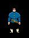
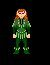

[ Home | Comments | Drakkar Links ]
You may create up to four characters per MPG-Net account, although you can only play one character at a time. Having multiple characters allows you to play characters with different skills and abilities. For example, one character might be a male City Dweller dedicated as a Fighter, and one might be a male Woodlands Dweller dedicated as a Mentalist.

City Dwellers
 Forest Dwellers
Forest Dwellers
Forest Dwellers are tall, slim, humanoids with pointed ears. They are very elegant and
delicate in appearance, and speak in a melodious tongue. They tend to be agile and
extremely charismatic, with high intelligence. Some say that when their voices lift in
song, the trees around them are apt to tremble at their beauty.
 Mountain Dwellers
Mountain Dwellers
Mountain Dwellers are short, stocky, hardy individuals with leather skin. They have good
constitutions and are very strong. They tend to have terrible luck but start out with more
gold pieces than any other race. And their skills as fighters keep their sacks full.
 Outcasts
Outcasts
Outcasts, as the name implies, are shunned by most other races. Long ago a mark was placed
upon every Outcast's face so that all might know to avoid them, but everyone has mellowed
with the passage of time. The legends imply that the reason for this marking goes back to
the days when the Drakkar's power was great, and mortal traitors bent to her will.
Outcasts' strength and weaknesses have long been hidden due to their secretive and
solitary existence, but they are rumored to have great strength but little luck.

 Underground Dwellers
Underground Dwellers
Underground dwellers are extremely short and somewhat childlike in appearance. But don't
underestimate them, because they are great fun once you get a few ales down them. In
addition, they are extremely agile and have strong constitutions. As with the Outcasts,
Lady Luck rarely smiles on the Underground Dweller.


Woodlands Dwellers